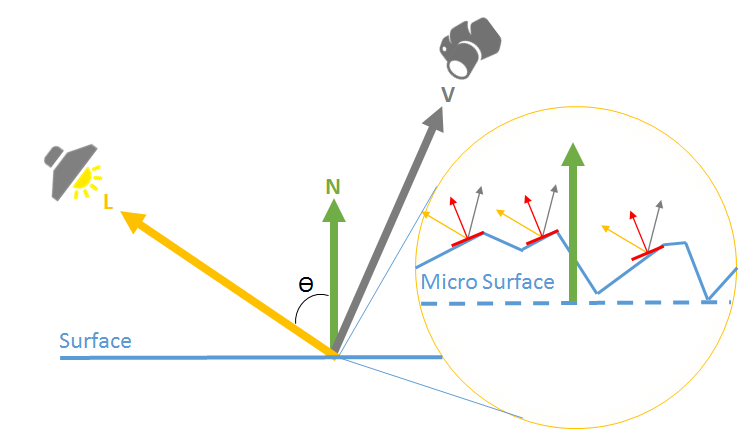
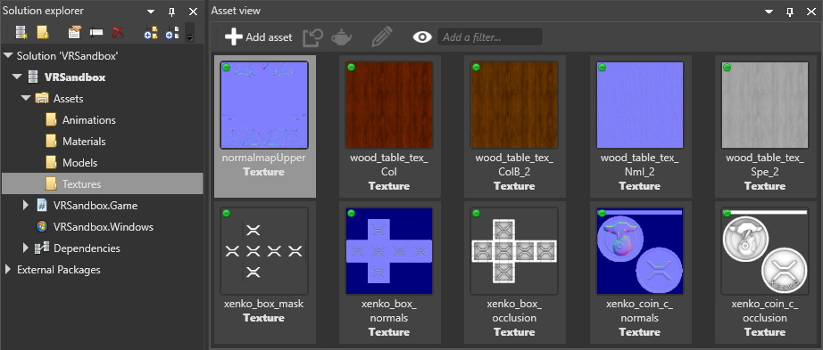

Normal maps
Warning
Приносим свои извинения за неудобства. Для этой страницы нет перевода на русский язык. Она будет отображаться на английском языке.
Intermediate Artist Programmer
Normal maps are textures that add the appearance of surface detail, such as cracks and bumps, without changing the actual geometry of a model. They contain information about how meshes should reflect light, creating the illusion of much more complex geometry. This saves lots of processing power.
| No normal map | With a normal map |
|---|---|
 |
 |
| Original mesh | Simplified mesh | Simplified mesh and normal map |
|---|---|---|
 |
 |
|
| 4m triangles | 500 triangles | 500 triangles |
(Images courtesy of Paolo Cignoni, shared under Attribution-ShareAlike 1.0 Generic (CC BY-SA 1.0)
Normal maps usually represent small changes of the normal vector (the vector which points away from the surface). Stride uses the most common convention: the X and Y components follow the tangent and the bitangent of the surface, and the Z component follows the normal vector of the surface. This means that a value of (0, 0, 1) coincides with the normal vector and represents no change, while a value of (-1, 0, 0) tilts to the "left" (ie negative X value in the tangent (local) space).

Use a normal map
In the Asset View, select the texture you want to use as a normal map.

In the Property Grid, make sure the type is set to normal map.

This means Stride assumes the texture is in linear color space and converts it to a format suited for normal maps.
In the Asset View, select the material you want to use the normal map.

In the Property Grid, under the material Geometry properties, expand Surface.
Next to Normal map, click
 (Replace) and make sure Texture is selected.
(Replace) and make sure Texture is selected.Next to Normal map, click
 (Select an asset).
(Select an asset).Select the normal map texture and click OK.
For more information about materials, see Materials.
Normal map properties
Normal map textures have two properties in addition to the common texture properties.

| Property | Description |
|---|---|
| Invert Y | Have positive Y components (green pixels) face up in tangent space. This option depends on the tools you use to create normal maps. |
For information about normal map properties in materials, see Materials — Geometry attributes.